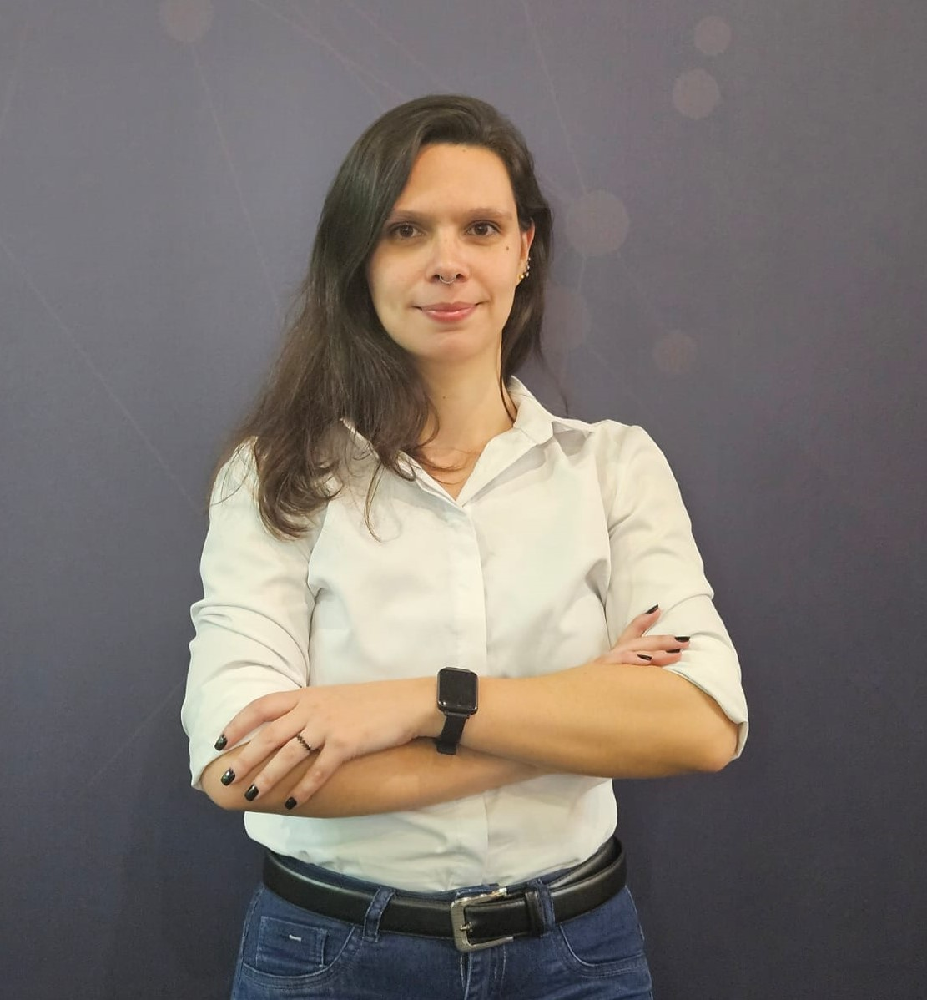
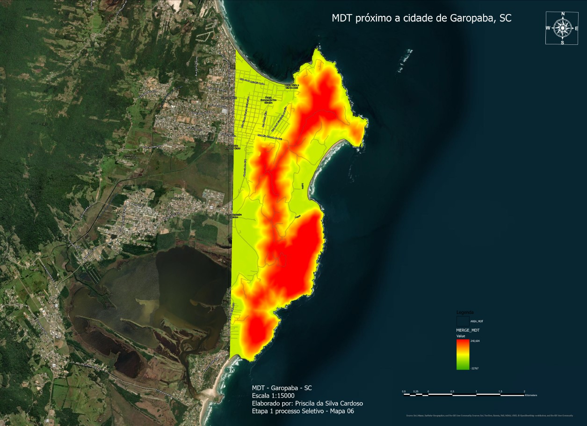
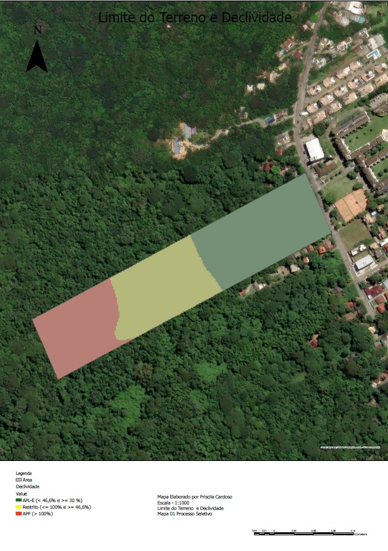

Sobre Mim
Considero o início de minha trajetória profissional no primeiro semestre de 2012, assim que iniciei a faculdade de bacharelado em Geografia.
Foi bem importante pois foi após a tragédia na região Serrana do Rio de Janeiro, mais especificamente na minha cidade: Nova Friburgo.
Com a faculdade pude entender os acontecimentos que afetaram a minha cidade e escrevi minha monografia baseando-se na história da cidade, fazendo um resgate histórico
até as vias de fato do ocorrido em janeiro de 2011. Com a Monografia consegui uma menção Honrosa na própria cidade em 2016, no ETARSERRA.
Em 2019 iniciei uma pós graduação em Gestão Ambiental. Desta vez quis ir mais afundo e discorri sobre um bairro bem afetado na cidade e as ligações
com áreas de proteção ambiental, conclui no mesmo ano em dezembro.
Já ingressei no mestrado logo após, mudando a área de estudo, porém voltado às mudanças climáticas que também foram alvo na Monografia. Meu mestrado foi em Ordenamento Territorial Ambiental, com foco em mudanças climáticas.
Fui inserida num projeto na Antártica, sobre derretimento de permafrost e mudanças climáticas. Antes de terminar o mestrado consegui um emprego na área de Geoprocessamento
em São Paulo e me mudei em 2021. As assimilações, aprendizado, foram só crescendo e já possuo 5 anos de experiência em projetos com Geoprocessamento que vão,
da extração dos dados brutos até a entrega do produto final, envolvendo projetos de Linhas de Transmissão, Uso e Ocupação do Solo, Vetorização
para diversos fins mais e menos complexos, instalação de placas solares, verificação de áreas de inundação, Restituições para Cadastramento Imobiliário,
entre outros. Sempre estou me atualizando fazendo workshops e minicursos na área, como o da USP em Captura e Crédito de Carbono, programação em Geoprocessamento,
Google Earth Enginee e o EUESRI2024 com as novidades e aplicações do Arc Gis Pro em diversar áreas de atuação com foco em Geoprocessamento. Mais recentemente trabalhando com gestão de ativos, fiz um curso de FME desenvolvendo a parte ETL (Extract, Transform, Load), importante para transformação, manutenção e gestão de dados.
Entre os softwares que possuo habilidade estão: ArcGIS pro, ArcGIS, Autocad, Global Mapper, QGIS e Microstation.

Em Desenvolvimento
A Inteligência Artificial e o desenvolvimento de maneiras mais ágeis de fazer mapeamentos estão cada vez mais ganhando espaço. Aqui, vou mostrar um pouco do que desenvolvi
de amostras utilizando linguagem python e o software Qgis, para treinamento de um modelo de Machine Learning. Inicialmente tendo a área de trabalho, baixei imagens Sentinel - 2 (A2)
e fiz uma correção atmosférica e composigção RGB no software QGIS, utilizando o plugin SCP. Posteriormente, no mesmo plugin, realizei uma classificação automática chamada Kmeans, onde por variação
dos pixels ele agrupa os semelhantes e os classifica. Essa classificação pode ser feita também manualmente e semi automática, tudo depende da finalidade do seu projeto, escala de entregas
e demais informações que atendam ao que foi pedido. Aqui utilizei somente 4 classes, isso também varia de acordo com o detalhamento do seu projeto. Feito isso e com a ajuda do Gemini, pesquisei bibliotecas e códigos que pudessem me dar 100000 amostras dessa classificação em pactches
de 256x256, para que fique bem treinado e entregue bons resultados. Utilizei o Google Colab para fazê-lo, após subir essa imagem exportada do QGIS numa pasta no meu drive. O Código que utilizei ficará disponível no meu github.
Feito isso, as amostras podem ser inseridas no código de treinamento de máquina e rodado. Aqui o Objetivo era de Uso e ocupação do Solo. Não tendo como carregar 100000 amostras para visualização,
carreguei essas 30 amostras. E o resultado segue nas imagnes abaixo:

Projetos e Pesquisas
Monografia: Aspectos da Colonização suíça no Desastre de janeiro de 2011, na cidade de Nova Friburgo, RJ
 Uso e Ocupação do Solo do Centro da cidade de Nova Friburgo, RJ
Uso e Ocupação do Solo do Centro da cidade de Nova Friburgo, RJ
Este primeiro mapa refere-se ao meu projeto de conclusão de curso na graduação. Foi meu início de análise dados com o Geoprocessamento.
Foi minha contribuição à cidade que sofreu com as fortes chuvas em janeiro de 2011.
Foi possível verificar que o desordenamento populacional desde o
início da consolidação do município de Nova Friburgo, cuja base urbana foi instalada pelos
suíços, que o fator antrópico, agindo de maneira irregular em áreas de encostas íngremes,
como foi o caso do recorte desta pesquisa, juntamente com o desmatamento, primeiro fator
para estas modificações, potencializa os eventos extremos de chuva, como o de janeiro de
2011 que atingiram não somente a cidade, mas toda a região serrana. No Link abaixo, é possível ter acesso à publicação desta na revista UChile.
Acesso a Publicação na Revista Investigaciones Geográficas
Pós Graduação: Gestão Ambiental - Áreas de Preservação
Permanente: proposta de monitoramento de Áreas de risco na cidade de Nova Friburgo,RJ
 Mapa de Localização de Área de Preservação Permanente no bairro de Conselheiro, cidade de Nova Friburgo,RJ
Mapa de Localização de Área de Preservação Permanente no bairro de Conselheiro, cidade de Nova Friburgo,RJ
 Mapa de Declividade e Curvas de Nível do bairro de Conselheiro cidade de Nova Friburgo, RJ
Mapa de Declividade e Curvas de Nível do bairro de Conselheiro cidade de Nova Friburgo, RJ
Este projeto de
pesquisa busou identificar algumas das Áreas de Preservação Permanente (APP’s) no bairro Conselheiro, na
cidade de Nova Friburgo, RJ. Locais ocupados, mesmo após o desastre de janeiro de 2011,
mencionado aqui pelo fato da ocupação de APP’s potencializarem os eventos como o ocorrido na
cidade em 2011 e propor o monitoramento contínuo das mesmas. Utilizando SIG (Sistema de
Informação Geográfica) para identificação das APP’s nos bairro de Conselheiro Paulino, e posterior comprovação de tais localidades,
com trabalho de campo, propor medidas mitigadoras e de manejo para dar suporte à
população que reside nestas áreas e também viabilizar corretamente seu uso de forma a não
agredir o ambiente, fato que resultou na criação das leis de Áreas de Preservação Permanente
(APP’s).
Clique aqui para baixar o PDF
Colapso do lago Boeckella, Baía Esperanza: as mudanças nas áreas livres de gelo na Península Antártica
 Mapa de Localização da Área de Estudo
Mapa de Localização da Área de Estudo
 Localização, NDWI, Índice Kappa e Vetor do Lago Boeckella
Localização, NDWI, Índice Kappa e Vetor do Lago Boeckella
Após as verificações estatísticas, o geoprocessamento neste projeto, contou com as imagens Landsat 7
e 8, que, embasaram as considerações da pesquisa, agregando o
valor da imagem e percepção visual das modificações temporais da área de estudo.
Com a aquisição das imagens, estas foram pré-processadas no SIG QGIS 10.6, nas
etapas de correção atmosférica e composição de bandas, no SCP (Semi-Automatic
Classification Plugin).
Após a correção atmosférica, foi calculado o
procedimento para geração do NDWI (Índice de Água Normalizada - McFEETERS, 1996),
também no software QGIS 10.6. Esta etapa foi realizada através da calculadora raster,
utilizando as bandas 2 e 4 para as imagens do Landsat 7 (Equação 1) e as bandas 3 e 5 para as
imagens do Landsat 8 (Equação 2):
Equação 1. NDWI = (Band 2 – Band 4) / (Band 2 + Band 4)
Equação 2. NDWI = (Band 3 – Band 5) / (Band 3 + Band 5)
Para a validação entre a classificação do NDWI pelo classificador k-means foi
realizado o cálculo do índice Kappa e foi baseado na análise visual da composição raster RGB
654 (sensor OLI) ou 543 (sensor TM) de cada data. Em breve sairá a publicação da tese.
Trabalho
Processamento LASER
 Nuvem de Pontos
Nuvem de Pontos
Durante quatro anos atualando com Geoprocessamento, o Laser - Lidar, fez parte dessa trajetória de conhecimento. Proveniente do aerolevantamento
com avião e helicóptero, acoplados a estes ficam os sensores que vão captar a nuvem de pontos bruta e as ortofotos que serão processadas e tranformadas
em produtos cartográficos. Com os dados em mãos utilizando a nuvem de pontos bruta esta é classificada e fica como mostra a figura acima.
Através dela, geram-se curvas de nível, MDT (Modelo Digital de Terreno) e MDS (Modelo Digital de Superfície), que também são entregues e fazem
parte da análise a depender de cada objetivo e de cada projeto.
Fonte: https://futuriste.com.br/blog/mapeamento-com-drones-guia-completo/pointcloud/.
Processamento ORTOFOTOS
 Ortofoto
Ortofoto
O processamento das Ortofotos também ocorre após a entrega dos dados obtidos do aerolevantamento. Utiliza-se a trajetória realizada no Extração
e o MKP (Model Key Point), que é um ground, um terreno para ser a base dessa ortofoto georreferenciada. Após o processamento, esta fica como mostrado acima. O Processamento da foto foi realizado por mim.
Vetorização
 Vetorização
Vetorização
A vetorização é um produto que serve na análise de diversor tipos de projeto. Inundações, construções, rodovias, restituições e muitas outras.
Pode ser feita em Autocad ou ArcGIS Pro como é o caso da imagem abaixo. Tudo isso a depender do objetivo do projeto. A Vetorização em questão, acima, foi realizada por mim.
Geologia e NDVI para auxiliar no monitoramento de inundações
O Processo para gerar mapas de inundações passa por capturas de um conjunto de dados. Áreas alagáveis, Geologia, Geomorfologia, Precipitação, Declividade entre outros. Nas imagens dos mapas abaixo,
podemos verificar dois exemplos que juntos com as demais atribuições citadas fariam parte de um projeto para verificação de áreas com risco de Inundações: o de Geologia e o de NDVI.
Este projeto foi um teste e ainda não foi concluído.
 NDVI cidade Taquari, RS
NDVI cidade Taquari, RS
 Geologia do Município de Santa Luzia do Piauí, PI
Geologia do Município de Santa Luzia do Piauí, PI
Alguns mapas que fiz para processos seletivos
Os mapas abaixo foram parte de um processo seletivo que realizei para o RS. Essesnciais para muitas análises. Embora sejam básicos, parte também para mapeamento de Uso e Ocupação do Solo, importantes
em análises, ambientais, econômicas e sociais. Foram feitos com imagens de satélite.Na ordem: MDT de Garopaba, Limite e Declividade de Terreno e Fitofisionomias, levando em consideração Uso e Ocupação do Solo.



Considerações
O que foi mostrado aqui tem uma complexidade maior do que o escrito.
Nos links compartilhados pode-se ter acesso melhor a alguns dos artigos. É somente uma amostra do meu trabalho.
Todos os mapas mostrados aqui foram elaborados por mim e fazem parte da minha trajetória. Este site foi criado por mim em HTML, através do programa VS Code.